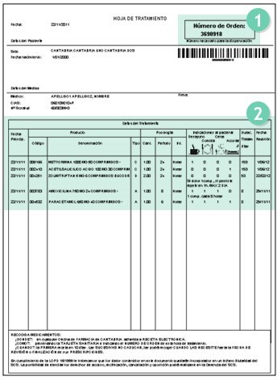
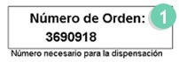
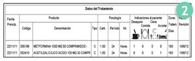

¿Qué es?
La Receta electrónica es la automatización de la prescripción y dispensación de los medicamentos y productos sanitarios.
El cambio fundamental es la eliminación de la receta en papel. El paciente ya no tiene que acudir a la farmacia con las recetas para que le dispensen los medicamentos. Presentando la tarjeta sanitaria, el farmacéutico/a le dispensará la medicación prescrita por su médico.
Además, si no se modifica ningún aspecto de su medicación, no necesitará volver al centro de salud o al médico para obtener más recetas. Puede dirigirse directamente a la Farmacia para recoger los medicamentos que necesite para continuar con el tratamiento.
¿Cómo funciona?
Si su médico le ha hecho la prescripción de los medicamentos en receta electrónica, no olvide llevar a la oficina de farmacia la tarjeta sanitaria.
Sin su tarjeta sanitaria no será posible dispensarle en ninguna farmacia.
El médico, al prescribirle en receta electrónica, le hará entrega de su hoja de tratamiento. Esta hoja recoge:


- El número de identificación de su tratamiento ("número de orden").
- Solo necesitará aportar este número en la farmacia si su tratamiento es confidencial.

- Todos los medicamentos que usted necesita, su dosis, con qué frecuencia debe tomarlos y hasta cuándo.
- La primera vez que utiliza la receta electrónica, debe acudir a la farmacia en 10 días, y al menos recoger un envase de cada medicamento prescrito, aunque tenga en casa.
- A partir de este momento y hasta la fecha de revisión indicada por su médico, usted podrá retirar sus medicamentos en la farmacia siempre que los necesite sin necesidad de acudir a la consulta de su centro de salud.
- Puede obtener una copia de su Hoja de Tratamiento en el servicio de admisión de su Centro de Salud.
Preguntas frecuentes de Receta Electrónica
1- ¿Cómo sé qué medicamentos tomo?
El médico, al finalizar la consulta, le entrega una Hoja de Tratamiento que recoge todos los medicamentos que necesita, su dosis, con qué frecuencia debe tomarlos y hasta cuándo.
Si pierde la hoja de tratamiento, puede pedir una copia en el mostrador de su centro de salud u hospital sin necesidad de solicitar cita con su médico.
2- ¿Cuándo tengo que recoger los medicamentos?
La primera vez que utiliza la receta electrónica, debe acudir a la farmacia en 10 días, y al menos recoger un envase de cada medicamento prescrito, aunque tenga en casa.
3- ¿Cuándo tengo que volver a la Farmacia a recoger más medicamentos?
Cuando se le acabe cualquiera de los medicamentos que está tomando de forma continua. El farmacéutico le podrá indicar la fecha aproximada de la próxima recogida o dispensación.
4- ¿Puedo recoger otros medicamentos que me han ido bien otras veces con la tarjeta sanitaria?
No, no puede recoger medicamentos que ha tomado ocasionalmente en el pasado. Debe acudir al médico quien valorará si lo tiene que tomar de nuevo.
5- ¿Tengo que volver al médico antes de recoger los medicamentos en la Farmacia?
No es necesario si los toma de forma continua. Puede recoger el medicamento hasta la fecha que ha indicado el médico. Su médico establecerá una duración para su tratamiento. Durante este período de tiempo no será necesario que vaya a su centro de salud para recoger recetas. Podrá recogerlos cuando los necesite.
Pasado el plazo indicado por el médico, sí tiene que volver a su centro de salud, para que el médico revise el tratamiento y valore si hace falta mantenerlo o modificarlo. El farmacéutico le avisará con tiempo suficiente para que vuelva al médico.
6- ¿Qué ocurre si en la farmacia no me pueden dar mi medicación?
Deberá acudir a su médico para solucionar el problema. En ningún caso la farmacia puede adelantar medicación.
7- ¿Puedo recoger la medicación en cualquier Farmacia?
Sí. Puede recoger su medicación en cualquier farmacia de Cantabria, o en cualquier otra comunidad, aportando su Tarjeta Sanitaria.
8- ¿Tengo que acudir siempre a la misma Farmacia?
No, usted puede acudir a cualquier farmacia. Puede recoger parte de la medicación en una farmacia y parte en otra.
9- ¿Qué sucede si me voy de vacaciones?
La receta electrónica dispensa medicación para 28 días. Si va a salir de la comunidad su médico podrá autorizarle medicación máxima para tres meses.
10- ¿Qué tengo que hacer si estoy en otra comunidad autónoma y necesito medicación?
La receta electrónica se puede utilizar en todas las Comunidades Autónomas.
Si es usted pensionista con topado en el importe a pagar de sus medicamentos, en las farmacias de Cantabria se aplicará el tope de aportación mensual legalmente establecido.
Si usted recoge la medicación en una farmacia fuera de Cantabria deberá solicitar el reembolso de lo que ha pagado de más, entregando en su centro de salud, los tiques de la farmacia donde se le dispensó.
11- ¿Qué hago si pierdo o se estropea la tarjeta sanitaria?
Acuda a su Centro de salud y solicite que le hagan una nueva.
12- ¿Puede mi cuidador o un familiar recoger mis medicamentos en la Farmacia?
Sí, siempre que presente la tarjeta sanitaria.
13- ¿Es necesario que acuda a Inspección para que me visen un medicamento?
No. Ya no es necesario acudir a visar las recetas al Centro de Salud. Usted podrá ir directamente a la Farmacia para que le dispensen la medicación.
14- ¿Es posible que no me puedan hacer una receta electrónica?
Sí, todavía hay algunas situaciones excepcionales o tratamientos en los que no se puede hacer uso de la receta electrónica y, por lo tanto, en el Centro de salud, su médico tendrá que prescribir en receta en papel.
15- ¿Puedo tener un medicamento fuera de mi tratamiento habitual?
Usted podrá solicitar al médico, la confidencialidad de alguno de sus medicamentos, de forma que no sean visibles por su farmacia habitual.
En este caso, además de la Tarjeta Sanitaria, habrá de presentar el número de la Hoja de Tratamiento de dicha prescripción.
Mi receta electrónica
Puede consultar su tratamiento activo de receta electrónica y sus dispensaciones a través del servicio "Mi Salud online" desde la web y desde la app del Servicio Cántabro de Salud.
El acceso a este servicio se puede realizar mediante Cl@ve Permanente, DNIe, o Certificado Electrónico a través de la web del Servicio Cántabro.
Accede a tu receta